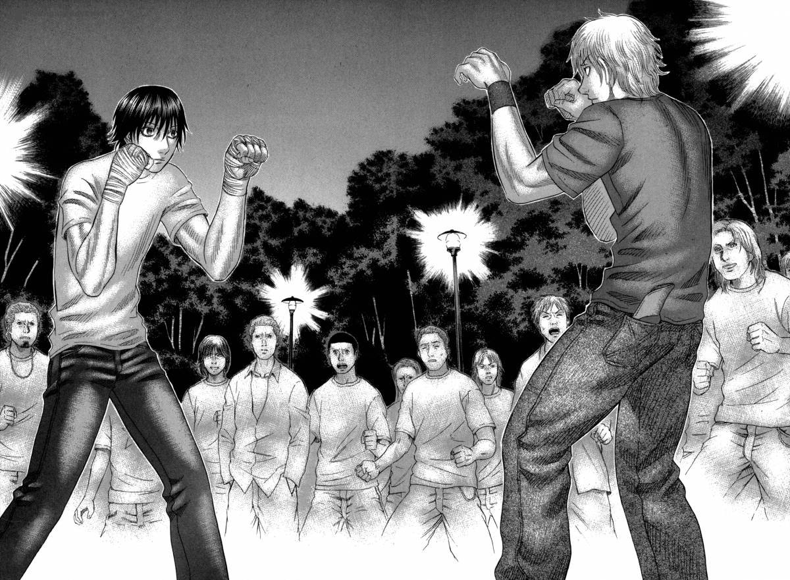

What is Holyland?
Holyland is a manga about Yuu Kamishiro, a young student who wanders the gang-ridden streets of Japan because he feels like he has no place at home or school. This psychological thriller is not just filled with blood pumping, grounded martial arts action, but also with beautiful character writing as well as interesting insight from the author's own experiences!
